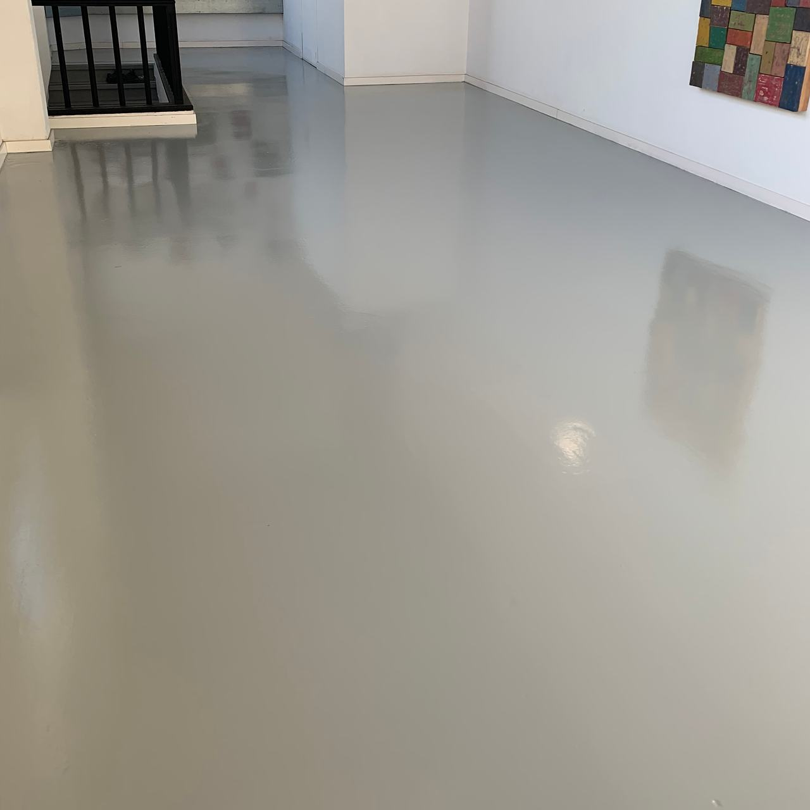

Microcemento: una superficie, sin juntas
Suelos, baños, cocinas y paredes continuos en Terrassa y el Vallès. Pocos milímetros de revestimiento que, muchas veces, se aplican sobre la baldosa o el azulejo que ya tienes, sin escombros.

Un revestimiento hecho a mano
El microcemento es un mortero muy fino de cemento, resinas y áridos que se extiende a llana en varias capas, hasta un espesor total de pocos milímetros. Al final se protege con un sellador que lo hace resistente al agua y a las manchas.
Como se aplica a mano, cada superficie tiene sus aguas y sus matices de tono. Es parte de su encanto y conviene saberlo antes: no queda igual que una baldosa de catálogo, y dos estancias del mismo color nunca son idénticas.
Su gran ventaja es la continuidad: suelo, zócalo, pared y plato de ducha pueden ir en el mismo material, sin juntas donde se acumule la suciedad.

Dónde funciona y dónde no
El microcemento es un buen material cuando se usa donde toca. Preferimos contarte ahora sus límites a encontrarnos una fisura dentro de un año.
| Suelos | Baños y duchas | Cocinas | Paredes | |
|---|---|---|---|---|
| Encaja bien | Salones, pasillos y locales; sobre baldosa bien adherida, sin levantarla | Paredes, suelo y plato de obra en continuo, sin juntas de azulejo | Frentes y suelos; también encimeras con el sellador adecuado | Sobre azulejo, yeso o mortero en buen estado |
| Pide cuidado | Desniveles: el microcemento copia el soporte, no lo nivela | Pendientes y desagües: se resuelven antes de aplicar | Calor directo de ollas y ácidos (limón, vinagre) si el sellador no es el adecuado | Placas de yeso laminado: juntas tratadas y malla |
| Mejor otra solución | Forjados con movimiento o soportes que se agrietan | Paredes con humedad que sube desde el suelo, sin resolver antes | Quien no quiera ninguna marca de uso con los años | Muros antiguos que necesitan transpirar: ahí va mejor la cal |

Lo que no se ve es lo que dura
Revisar el soporte
Golpeamos la baldosa para encontrar piezas huecas, buscamos fisuras y humedad. Lo que suena a hueco se fija o se cambia antes de cubrirlo.
Preparar
Limpieza a fondo, imprimación de adherencia y relleno de las juntas de la baldosa. En cambios de material o en placas, malla de fibra de vidrio.
Capas
Capas de base, más gruesas, y capas de acabado finas, con su tiempo de secado y lijado entre una y otra. La textura final se decide con una muestra.
Sellado
Un sellador que protege del agua, la grasa y el desgaste. En duchas y cocinas se elige pensando en el agua y en los productos de limpieza.
Gris claro, mucha luz
Suelos continuos de microcemento en interiores y locales. Pulsa una foto para verla grande.
Sobre microcemento
¿Se puede poner microcemento sobre azulejo?
Sí, es uno de sus usos más habituales, siempre que el azulejo esté firme. Se revisan las piezas huecas, se rellenan las juntas y se aplica una imprimación de adherencia. Así se reforma un baño sin picar ni sacar escombros.
¿Cuánto espesor añade? ¿Habrá que cortar las puertas?
Muy poco: pocos milímetros en total. Normalmente las puertas no se tocan, pero lo comprobamos en la visita, sobre todo si hay puertas muy ajustadas al suelo.
¿Se agrieta?
El microcemento sigue al soporte: si debajo hay una grieta que se mueve, acabará apareciendo encima. Por eso miramos antes el estado del suelo o de la pared, respetamos las juntas estructurales y usamos malla en los puntos débiles.
¿Resbala en la ducha?
Depende del acabado. En platos de ducha y suelos de baño se usa una textura o un sellador antideslizante. Te enseñamos la muestra antes de aplicarlo.
¿Cómo se limpia y qué mantenimiento tiene?
Con agua y jabón neutro; sin lejía, amoníaco ni estropajos abrasivos. En zonas de mucho paso, el sellador se renueva con los años sin tener que rehacer el microcemento.
¿Hacéis microcemento en Sabadell y en el resto del Vallès?
Sí. Estamos en Terrassa y trabajamos en Sabadell, el Vallès, Barcelona y el resto de Cataluña.
¿Qué espacio quieres cambiar?
Mándanos fotos del suelo o de las paredes actuales, los metros aproximados y qué estancia es. Con eso te orientamos y preparamos la visita.